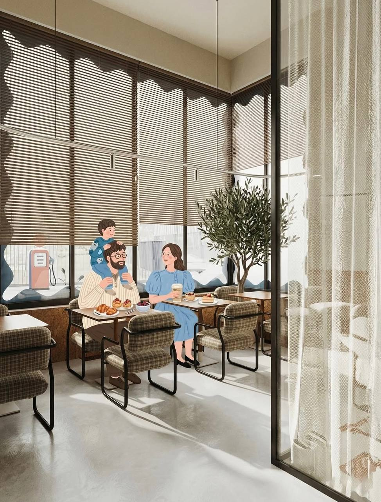

возвращаем бонусами
С каждого заказа на ваш бонусный счёт.
КОФЕ И ЗАВТРАКИ РЯДОМ С ДОМОМ
Любимый кофе, горячий завтрак и немного времени для себя — каждый день в «Восемь утра».
В простом всегда прячется самое нужное.
МЕСТО ДЛЯ ВАС
Встретиться с близкими, поговорить за чашкой кофе или просто побыть наедине с собой.
«Восемь утра» — кофейня для маленьких пауз среди большого города. Без лишнего шума, но со всем, что делает утро хорошим.

ЗАВТРАКИ ВЕСЬ ДЕНЬ
Кофе, горячие завтраки и выпечка — чтобы начать день вместе или устроить себе спокойную паузу позже.
Меню и доставкаКЛУБ ГОСТЕЙ «ВОСЕМЬ УТРА»
Покажите номер телефона при заказе — бонусы начислятся автоматически.
С каждого заказа на ваш бонусный счёт.
От суммы следующего заказа.
Зарегистрируйтесь в клубе гостей.
Назовите номер телефона при заказе.
Копите бонусы и используйте их при следующих визитах.
Подробности программы и действующих предложений можно уточнить у команды кофейни.
ДО ВСТРЕЧИ